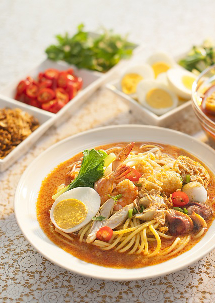

Mee Kari
Mee kari are a popular dish among many people. It is suitable for banquets on special occasions such as eid. Although the ingredients for mee kari appear to be numerous, cooking them is simple. Here are some recipes for mee kari.

INGREDIENTS
1 packet of yellow noodles
Curry sauce:
1 bowl of chicken
1 packet of fish cake
1 cup of concentrated coconut milk
2 small packet of chicken/meat curry powder
4 cloves garlic
8 onions
1 stalk of lemongrass
2 tablespoons of ground chilli
1 stalk of curry leaves
Salt
Palm sugar
Tamarind juice
3 tablespoons of cooking oil
Water
Decorating:
Mustard leaf
Bean sprouts
Fried tofu
Boiled eggs
Red chillies
Fied onions
INGREDIENTS PREPARATION
- Cut the chicken into small pieces and slice the fish cake thinly.
- Grind onion, garlic and lemongrass together.
- Mix the curry powder with a small amount of water so that it becomes a paste.
- Clean and chop the mustard greens.
- Boil the eggs, then peel and cut in half.
- Cut fried tofu thinly.
HOW TO MAKE
- Boil water in a pot until boiling.
- Add the yellow noodles and wait until it becomes soft. Remove and rinse with cold water so it does not stick.
- Add mustard greens and bean sprouts. Remove it from the boiling water after 30 seconds.
Curry sauce:
- Heat the cooking oil in the pot and fry the ground ingredients and curry leaves until fragrant.
- Add the ground chillies and fry until crisp and bursting with oil.
- Add curry paste and mix well.
- After that, add the chicken and fish cake. Stir until the chicken water is dry.
- Add water and cook until it boils.
- Then add coconut milk, tamarind juice, palm sugar and salt to taste.
- Stir until it boils.
- Reduce the heat and stir. Let it simmer for about 5 minutes.
- Put out the fire and lift it from the stove.